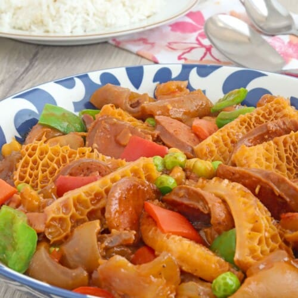

Callos Recipe
What is Callos?
If there’s one thing you can count on in Filipino cuisine, it’s that we know what we’re doing with our meat. Innovative and unafraid in our cooking, Filipinos see the endless possibilities in any ingredient, and are able to make it into a dish nothing short of fantastic. It is one of our strongest points, and one of the things that is unquestionable about our culture: we know how to make really, really good food. So it comes as no surprise, then, that this callos recipe is, frankly, fantastic.
Ingredients
1 1/2 lb ox feet veal shanks, cleaned
2 lbs ox tripe cleaned
15 ounces chick peas garbanzo beans
8 ounces tomato sauce
2 chorizo de bilbao sliced
1/4 lb bacon sliced crosswise in 1 inch length
1 bell pepper cut into thick strips
1 onions sliced
1/4 cup extra virgin olive oil EVOO
1 teaspoon salt
1/2 teaspoon ground black pepper
1 carrot cubed
1 teaspoon whole peppercorn
4 cups water
Instructions / How to Cook
1. Pour water in a casserole or cooking pot and bring to a boil.
2. Put-in the onion, whole peppercorn, ox feet, and ox tripe. Simmer until the ox feet and tripe are extremely tender (you may use a slow cooker or pressure cooker for this step).
3. Remove the ox feet and tripe from the cooking pot and let it cool down for a few minutes. Set the stock aside for later use.
4. Cut the ox tripe into bite size pieces and debone the ox feet. Set aside.
5. Heat a large wok or pan then pour-in the olive oil.
6. Add chorizo de bilbao and bacon then cook in medium heat for 5 to 8 minutes.
7. Pour-in the tomato sauce then let boil.
8. Add the tender ox feet and tripe and 2 cups of stock (water used to boil ox feet and ox tripe) then simmer for 10 minutes.
9. Add salt and pepper then put-in the carrots. Simmer for 3 minutes.
10. Put-in the chick peas and bell pepper then simmer for 10 minutes.
11. Transfer to a serving dish.
12. Serve hot. Share and enjoy!